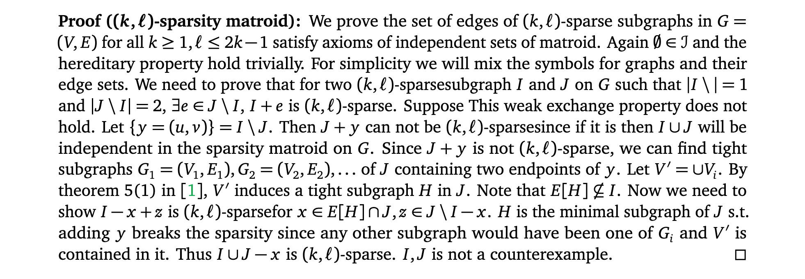
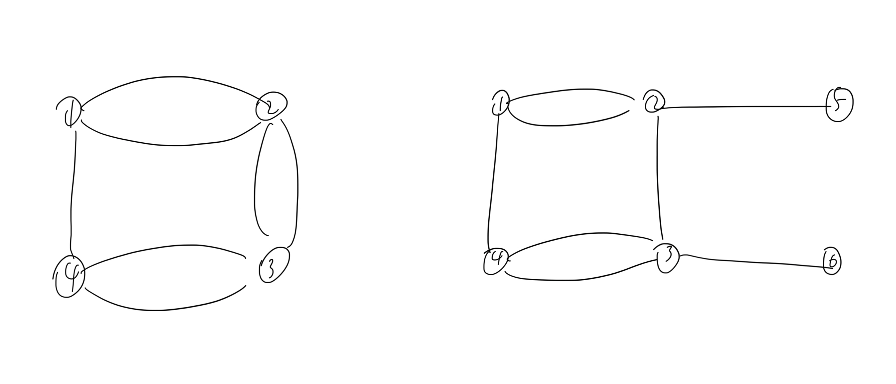
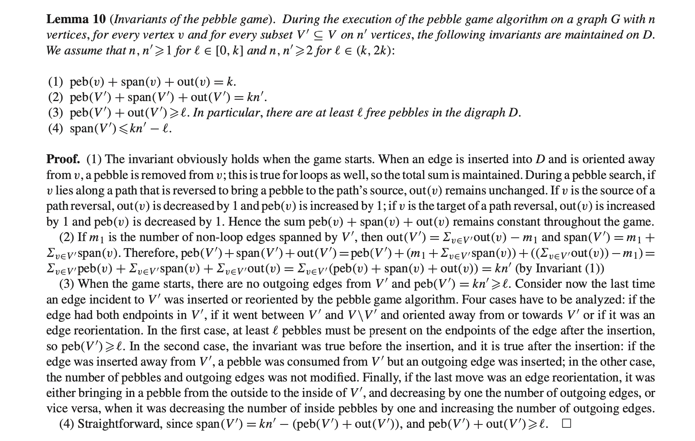

Problem collecting pebbles. Given a directed graph
\(G=(V,E)\). There are pebbles on a
subset of vertives \(T\subset V\). We
can move pebbles along the directed edges. Once we move a pebble along
some edge, this edge is immediately inverted. The problem is can we move
\(k\) pebbles to a special vertex \(s\).
I think this should be NP-Hard but I don’t know how to prove it.
I found this problem in a paper “Pebble
game algorithms and sparse graphs”. On \((k,\ell)\)-sparse graphs with special rules
for putting initial pebbles this problem can be solved through simple
depth-first-search.
There are two interesting ideas in the paper. The relation of sparsity
and pebble games and why the above problem can be solved with simple
dfs.
1\((k,\ell)\)-sparsity
\((k,\ell)\)-sparsity is a quantitative
way to say how sparse an undirected graph is. \(k,\ell\in \mathop{\mathrm{\mathbb{Z}}}_+\)
and \(\ell \leq 2k-1\). A graph \(G\) is \((k,\ell)\)-sparse if \(|E|\leq k|V|-\ell\) holds for any subgraph
\(H=(V,E)\) of \(G\). One can see that \(\ell \leq 2k-1\) since otherwise there must
be no edge between any two vertices. The \((k,\ell)\)-sparse subgraphs(edge set) of
\(G\) form the independent sets of a
matroid. For more on matroid and especially sparsity matroid, read matroid and sparsity
matroid. The Pairs (k,l) that form a matroid part in
the sparsity matroid link is misleading. Matroids with \(k,l\) and \(n\) satisfying those condition will have a
spanning tight graph as their bases; those who don’t satisfying
conditions are still matroids but their bases will never be \((k,\ell)\)-tight graphs.
Actually more general things are also matroids. They are called count
matroids. read Andras Frank’s “Connections
in Combinatorial Optimization” Theorem 13.5.5 for proofs.
In terms of sparsity, the proof in the book basically shows \(r(F)=k|V(F)|-l\) is a matroid rank function
and the independnet sets of our sparsity matroid defined above are
exactly the independent sets of the matroid defined by rank function
\(r\).
If you want to prove the independnet set exchange property directed, it
seems a little harder. We need to show for any two \((k,\ell)\)-sparse subgraph \((V_1,I_1)\) and \((V_2,I_2)\) s.t. \(|I_1|>|I_2|\), there exists \(e\in I_1\setminus I_2\) s.t. \(I_2\cup \{e\}\) is \((k,\ell)\)-sparse. We only consider
connnected graphs. If \(V(I_1)\) is not
a subset of \(V(I_2)\), there would be
\(u\in V(I_1)\) and some edge \(e\) connecting \(u\) and \(V(I_2)\). \(e\) can be added to \(I_2\) since \(k\geq 1\). On the other hand if \(V(I_1)\) is a subset of \(V(I_2)\) how to find such an edge? Suppose
such an edge does not exist. Then for any \(e=(u,v)\in I_1\setminus I_2\), we can find
a tight subgraph \(H=(V',E')\)
of \(I_2\) containing \(u\) and \(v\) but not the edge \(e\).(see Theorem 5 in the pebble game
paper). Also there exists at least one edge in \(E'\) but not in \(I_1\). (I think the contradiction is
\(|I_2|\geq |I_1|\) but don’t know what
to do next…) This method doesn’t work

sparsity proofs
Googling ‘graph sparsity’ normally returns sparsity measurement like
upperbounds on average degree or max degree. There are many literature
about bounded max(average) vertex degree graphs(see this lecture from
mim_uw for example). However these definitions don’t imply matroids.
For example graph with max degree 4.

counterexample
One can see that the two graphs do not satisfy the independent set
exchange property.
2 pebble game
How to decide whether a given graph is \((k,\ell)\)-sparse? “Pebble
game algorithms and sparse graphs” provides an algorithm solving the
problem in polynomial time(\(O(n^2)\),\(n\) is the number of vertices) and a proof
of equivalence of pebble game and graph \((k,\ell)\)-sparsity.
The algorithm described in the paper basically finds a base of \((k,\ell)\)-sparsity matorid defined on the
input graph. Note that finding a base of any matroid \(\mathcal{M}=(E,\mathcal{I})\) can be easily
done with \(O(|E|)\) independence
oracle calls. If we want a polynomial time alg then the independence
oracle must be fast. A bruteforce method is to check every subgraph. We
can certainly not afford that.
In the paper the authors designed a nice way to check independence. The
idea is instead of comparing \(k|V|-\ell\) and \(|E|\), they compare \(k|V|-|E|\) and \(\ell\). Then \(\ell\) is fixed and checking every subgraph
to compute \(k|V|-|E|\) is still
needed. They manage to count \(k|V|-|E|\) by counting pebbles on vertices
instead of counting edges. Thus the rules of pebble games are quite
straightforward(but still some ambiguous rules). Initially we have an
empty graph and \(n\) vertices. On each
vertex there are \(k\) pebbles(for
\(k|V|\)). We consider edges one by one
in arbitrary order. Once we added an edge to the graph, we should remove
one pebble from one of the edge’s endpoints. We need to design rules for
accepting or rejecting edges. Astute readers may find that simply
removing pebbles while adding new edges is completely not working 😅. We
want the remaining pebbles on any subgraph to be \(k|V|-|E|\) but the method we try to use
doesn’t guarantee this since we may remove a pebble on either endpoint
of the added edge…
In the paper they use directed graph. When considering an undirected
edge \((u,v)\), they make it
directed(i.e. \(u\rightarrow v\)) and
then remove a pebble from the source(\(u\)). An edge is accepted if and only the
endpoints can collect \(l+1\) pebbles
in total. Collecting pebbles is just searching paths from \(u\) or \(v\) to some vertex with pebbles and moving
one pebble from that vertex to \(u\)(or
\(v\)) and reversing the edges on the
path. For any vertex, if an out edge is added, an pebble is
removed(accepting edge); if one pebble is removed, an out edge is
added(pebble collecting vertex); if one pebble is added, one out edge is
removed(reverse pebble collecting path).
One can see that for any subgraph \(G'=(V',E')\) this pebble
collection and edge adding operation preserve the sum of
total number of pebbles on \(V'\)
\(|E'|\)
\(\delta_{\text{out}}(V')\).
see the paper for detailed proof.

proof in the paper
The last question is can we do every operations in polynomial time? or
in other words why collecting pebbles can be done in polynomial time? In
the paper there is a lemma saying that if adding an edge \((u,v)\) does not break sparsity and there
are not enough pebbles on \(u\) and
\(v\)(we need to do pebble collection),
then we can always find a pebble collecting path without changing the
pebble count of other vertices. Thus we can collect pebbles by simple
dfs.
python code for hypergraph sparsity.
from networkx import Graphfrom itertools import chain, combinations'''pebble game algorithm for checking hypergraph sparsity.`hyperedges` is a list of frozensets of non-number objects.for example, `[frozenset({'1', '0'})]`'''def pebblegame(k,l,hyperedges:list): vertices=frozenset().union(*hyperedges) n=len(vertices) pebs={v:k for v in vertices} H_tail=Graph() H_tail.add_nodes_from(range(len(hyperedges)),bipartite=0) H_tail.add_nodes_from(vertices,bipartite=1)def add_edge(i): H=hyperedges[i] v=next(filter(lambda v:pebs[v]>0,H)) pebs[v]=pebs[v]-1 H_tail.add_edge(i,v)returnNonedef collect_pebble(v,forbiddenset): # collect 1 peb to v. visited=set() path=[]# use dfs to collect pebsdef dfs(node,node_H):if node in visited: returnFalse# don't use nodes in Hif node_H !=-1and node in forbiddenset: returnFalse visited.add(node) path.append((node,node_H))if node notin forbiddenset and pebs[node]>0:# pebs[node]=pebs[node]-1# pebs[v]=pebs[v]+1returnTruefor H in H_tail.neighbors(node):for nxt in hyperedges[H]:if nxt!=node and dfs(nxt,H): returnTrue path.pop()returnFalseif dfs(v,-1): # find a pebble# collect the pebble t,_=path[-1] pebs[t]=pebs[t]-1 pebs[v]=pebs[v]+1# reverse hyperedges last_u,last_H=path.pop()whilelen(path): top_u,top_H=path.pop() H_tail.remove_edge(last_H,top_u) H_tail.add_edge(last_H,last_u) last_u,last_H=top_u,top_HreturnTrueelse: returnFalse# try to add every hyperedgefor i inrange(len(hyperedges)): H=hyperedges[i] demand=l+1-sum([pebs[v] for v in H])if demand<=0: add_edge(i)else: # collect pebswhileTrue: collected=Falsefor u in H:if H_tail.degree(u)>0:if collect_pebble(u,forbiddenset=H): demand=demand-1 collected=Trueif demand==0: breakifnot collected: # can not add this edgereturn"dependent"if demand==0: break add_edge(i)ifsum([pebs[v] for v in vertices])==l: return"tight"else: return"sparse"# # tests# import random# def bruteforce(k,l,hyperedges):# def non_empty_subsets(s):# return list(chain.from_iterable(combinations(s, r) # for r in range(1, len(s) + 1)))# for U in non_empty_subsets(hyperedges):# vertices=frozenset().union(*U)# if len(vertices)*k-l<len(U):# return "dependent"# return "sparse"# def generate_random_subsets(n, k):# # Define the set [n]# full_set = list(range(1, n + 1))# # Generate k random subsets# subsets = []# for _ in range(k):# # Randomly choose a subset size# subset_size = random.randint(1, n)# # Randomly select subset_size elements from the set# subset = random.sample(full_set, subset_size)# subsets.append(frozenset(map(str,subset)))# return subsets# while True:# n_v=100# n_H=10# k=2# l=2# hyperedges=generate_random_subsets(n_v,n_H)# pebble_res=pebblegame(k,l,hyperedges)# bf_res=bruteforce(k,l,hyperedges)# print(pebble_res,bf_res)# if pebble_res!=bf_res:# print(hyperedges)# input()
sage code for an straightforward \(O(n^3)\) implementation
def is_kl_sparse(g,k:int,l:int):r''' pebble game algorithm for deciding if `g` is (k,l)-sparse. `g` may have multiedges and loops use `g=Graph(multiedges=True,loops=True)` from sagemath graph https://linkinghub.elsevier.com/retrieve/pii/S0012365X07005602 '''assert(k>0and l>=0and l<=2*k-1) d=DiGraph(multiedges=True,loops=True) d.add_vertices(g.vertex_iterator()) peb=[k for _ in d.vertex_iterator()] edges=g.edges(labels=False)def dfs(u,v): # returns if u can get pebble. dfs should not touch v vis=[Falsefor _ in d.vertex_iterator()] pre=[-1for _ in d.vertex_iterator()] st=[] vis[u]=vis[v]=True st.append(u)whilelen(st): h=st.pop()if(peb[h]>0): peb[h]=peb[h]-1while pre[h]!=-1: d.reverse_edge((pre[h],h)) h=pre[h] peb[h]=peb[h]+1returnTruefor c in d.neighbor_out_iterator(h):ifnot vis[c]: vis[c]=True st.append(c) pre[c]=hreturnFalsedef edgeinsertion(u,v):if peb[u]==0: u,v=v,u d.add_edge(u,v) peb[u]=peb[u]-1 rej=0for (u,v) in edges:if peb[u]+peb[v]>=l+1: edgeinsertion(u,v)else:whileTrue: tryu=tryv=Falseif peb[u]<k: tryu=dfs(u,v)if peb[u]+peb[v]==l+1: edgeinsertion(u,v)breakif peb[v]<k: tryv=dfs(v,u)if peb[u]+peb[v]==l+1: edgeinsertion(u,v)breakifnot tryu andnot tryv: rej=rej+1break# d.plot().show()# input() pebsum=sum(peb)if pebsum==l:if rej==0: return"tight"else: return"spanning"elif pebsum>l and rej==0: return"sparse"else: return"other"# d=Graph(multiedges=True,loops=True)# d.add_edges([(0,2),(1,2),(1,3),(2,4),(2,5),(4,6),(4,7),(5,8)])# # d.plot().show()# # print(is_kl_sparse(d,1,1))# d.add_edge(4,6)# d.plot().show()# print(is_kl_sparse(d,1,1))# print(sum(peb))